Integrate
Oracle Digital Assistant with Oracle Service Cloud Live Chat - Tutorial 2 of 2
Integrate
Oracle Digital Assistant with Oracle Service Cloud Live Chat - Tutorial 2 of 2
This
is the second tutorial among a set of 2 tutorials. Please ensure you have completed the tutorial 1 before you start this. This tutorial expects that you are aware of the basic live chat integration between Oracle Digital Assistant and Oracle Service Cloud. This would be quite an interesting experience so let’s get started!
Here’s the scenario for this tutorial:
You
run a pizza store and provide online services to order a pizza
through various channels including a digital assistant on your
web site and Facebook Messenger. When you transfer a customer from a skil to a live agent you would want some basic information along with some specific details to be sent to the human agent. This saves time and reduces the time it takes for the agent to help the customer.
You
have a live chat on your web site and also help customers over a
call but most of the customers prefer that the conversations you
had with the bot be carried over to the CSR without customer
having to repeat the issue again. As part of the tutorial you
build this service so that bot conversations are transferred to
the CSR when the bot handoff to the live person.
Here is what you need to do:
- Use the skill that you created in Tutorial 1 that is already configured with a service cloud integration.
- Configure the Service Cloud to support context to be passed over through primary and custom fields exposed through the interface.
- Pass custom properties from the skill to the service cloud through the OBotML code.
- Test the skill.
 Before
You Begin
Before
You Begin
What Do You Need?
To complete this tutorial, you need:
- Access to
Oracle Digital Assistant Cloud instance.
- Access to Oracle Service Cloud instance.
- Oracle Service Cloud web based agent interface.
- Oracle Service Cloud windows client for configuring the Service Cloud chat service.
Tutorial 2: Passing user context from Oracle Digital Assistant integration with Oracle Service Cloud live chat & routing to custom queue.
Problem Statement
Note that in the tutorial 1 the skill does not provide specific information about the customer issue like product name or order no to the agent. Also the message is always sent to the Default Chat Queue of the Oracle Service Cloud. Consider that your customer wants to distinguish messages coming from the digital assistant skill from those that are coming from the web site live chat.
Why would that be required?
Justification
Generally the customer would already have an existing customer service team who is managing the live chat on their web site. Generally the conversations on the web site start with a greeting message from the agent asking “How may I help you?”.
But in a digital assistant conversation the user might have already discussed a few things with the assistant and would like to take the conversation ahead. The digital assistant sends the entire context of the conversation over to the agent so that the conversation could continue on the live chat.
In this advanced tutorial we will configure a new user “botuser” on the service cloud and a new custom queue “bot-queue”. We will then set up rules in service cloud to ensure that messages coming from the digital assistant are directed to this queue.
Let’s dive in.
 Configure Custom Properties
Configure Custom Properties
- Install Service Cloud Windows client on your windows machine by visiting the launch page of your Oracle Service Cloud page. https://solo-financial-1.rightnowdemo.com/cgi-bin/solo_financial_1.cfg/php/admin/launch.php 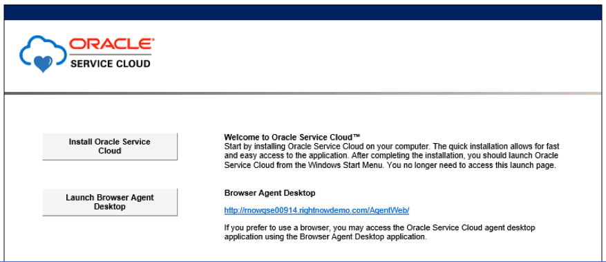
- Click on Install Oracle Service Cloud button. This would download the client and start the installation.
- This will open up the Oracle Service Cloud Login window. You can also search for rightnow on your windows search field and click on Oracle Service Cloud. 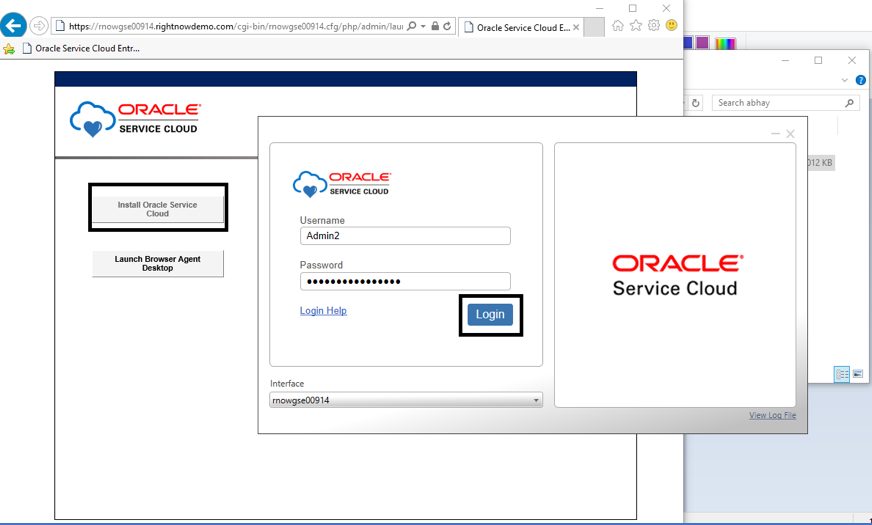
- Login to your Service Cloud Instance using an Admin account e.g. Admin2. Click on File - Options - View Options. 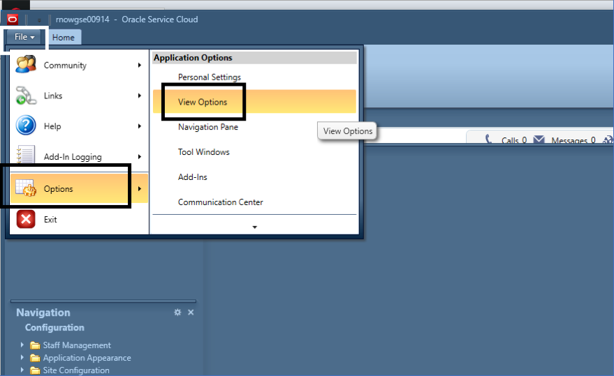
- From the View Options menu choose the Default Color Scheme. 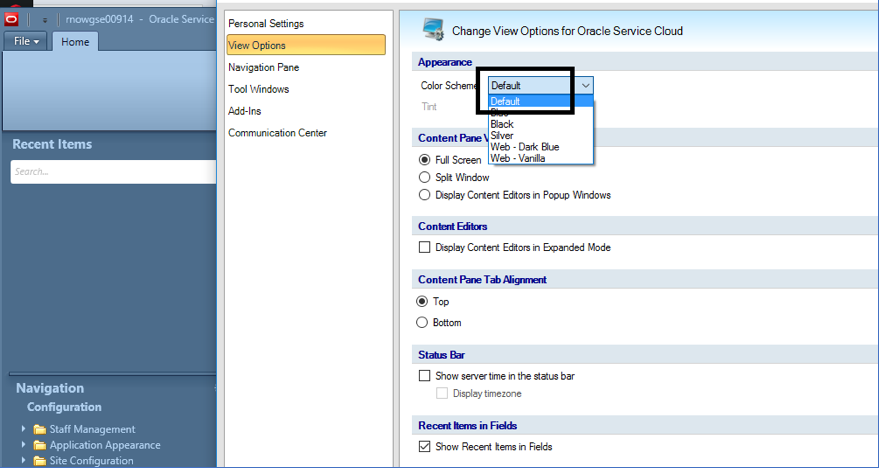
- There are 3 ways context could be passed onto the service cloud agent. 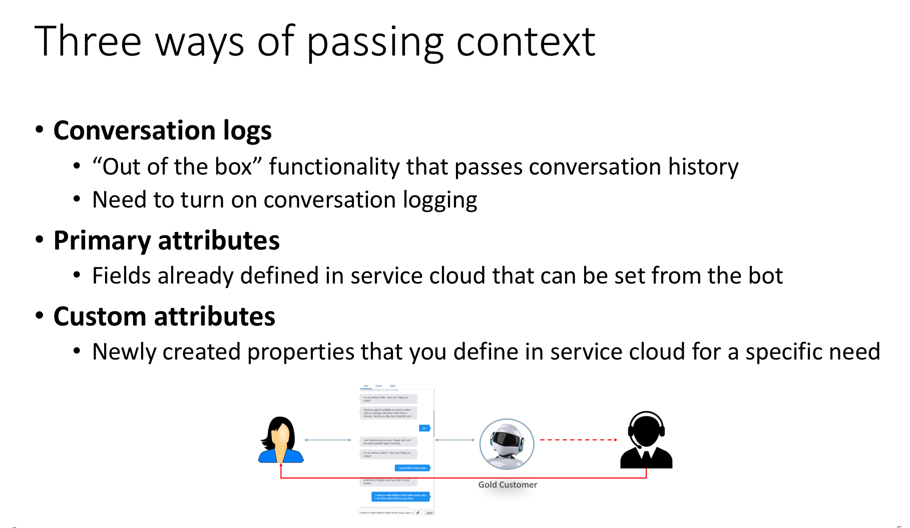
- Go to the Settings of your skill and enable conversation logging as shown in the figure below. 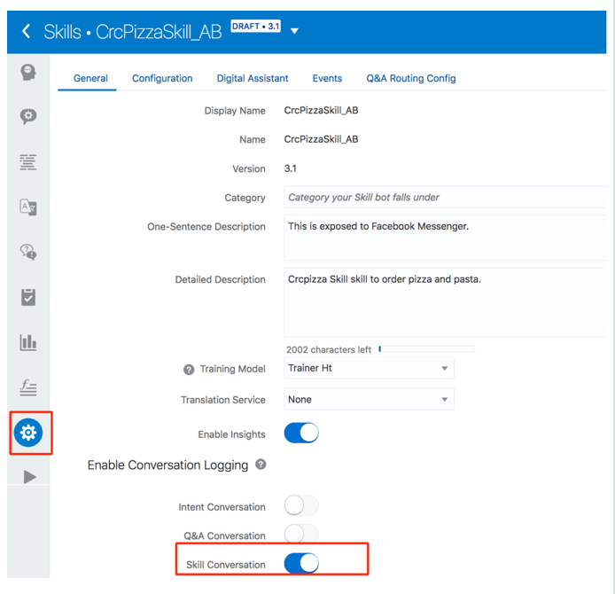
- Locate Interface name from your Oracle Service Cloud instance. Enter the following URL in your browser and login using service cloud credentials. Ensure you replace the service cloud correctly to point to your service cloud instance.
https://solo-financial-1.rightnowdemo.com/services/rest/connect/v1.3/siteInterfaces 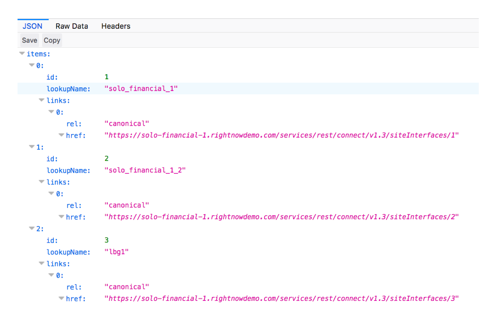 - Locate Product ID from your Oracle Service Cloud instance. Enter the following URL in your browser and login using service cloud credentials. Ensure you replace the service cloud correctly to point to your service cloud instance.
https://solo-financial-1.rightnowdemo.com/services/rest/connect/v1.3/serviceProducts 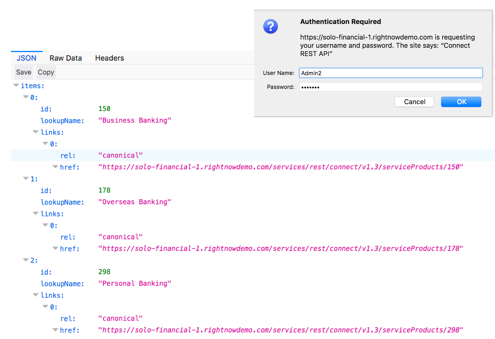 - Go to the dialog flow and locate the variables section at the top of the flow. Add the myCustomProps variable into the context section as highlighted below. This is of type map.
- Look at the following properties obtained from the SOAP URL for your service cloud instance to understand how iterface name and product id is defined. Ensure you point to the your service cloud instance.
Search for ChatCustomerInformation section in the response to find details.
https://solo-financial-1.rightnowdemo.com/services/soap/connect/chat_soap?wsdl=server
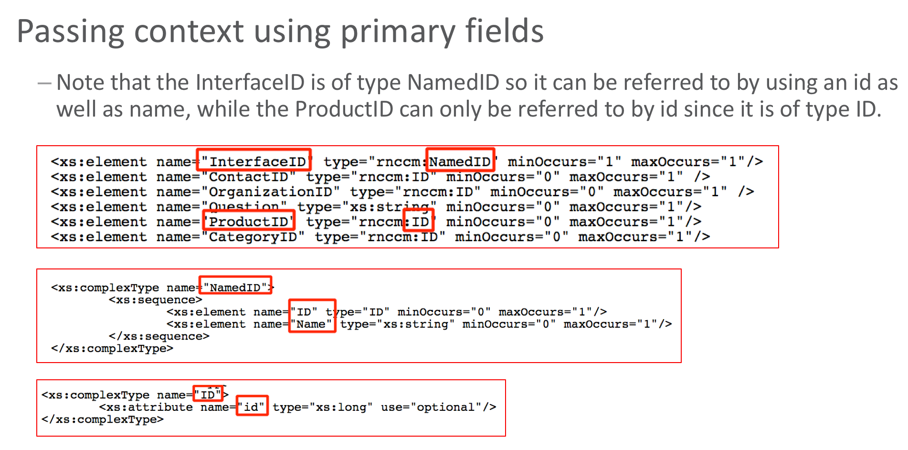
- Login to Oracle Service Cloud using the windows desktop client. Go to Configuration - Database - Custom Fields. Add 2 fields intent, vipstatus in the Incident table as shown below.
Question: Why incident table?
Answer: When a chat request is submitted from the skill to the Oracle Service Cloud it automatically created an incident and appropriate primary and custom fields get populated from the custom properties defined in the skill into the corresponding incident fields. - By clicking the New icon on the menu, create 2 fields intent and vipstatus. Note the data type, lenght and the default value. 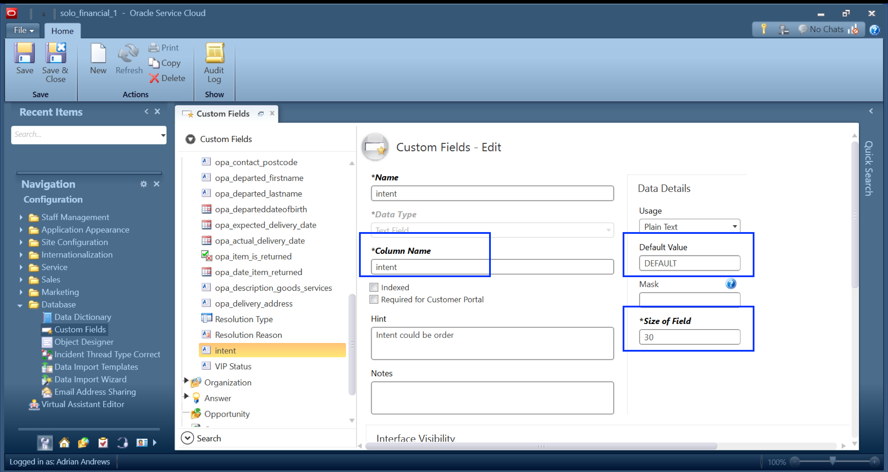
- For both the custom fields check the display checkbox as shown below. This will ensure that the custom field is available to the chat session. 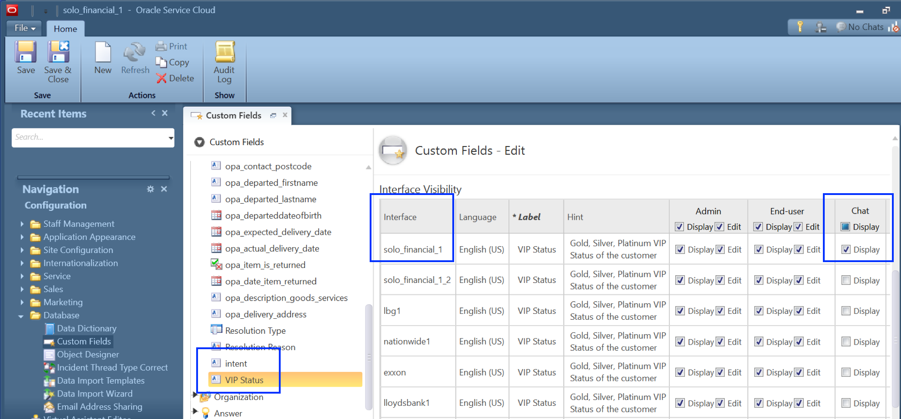
- Access the incident table using the following URL for your service cloud instance and verify that the custom fields are created in the incident table.
https://solo-financial-1.rightnowdemo.com/services/rest/connect/v1.3/queryResults/?query=select%20CustomFields.c.*%20from%20Incidents%20where%20(CustomFields.c.intent%20IS%20NOT%20NULL%20AND%20CustomFields.c.vipstatus%20is%20NOT%20NULL) 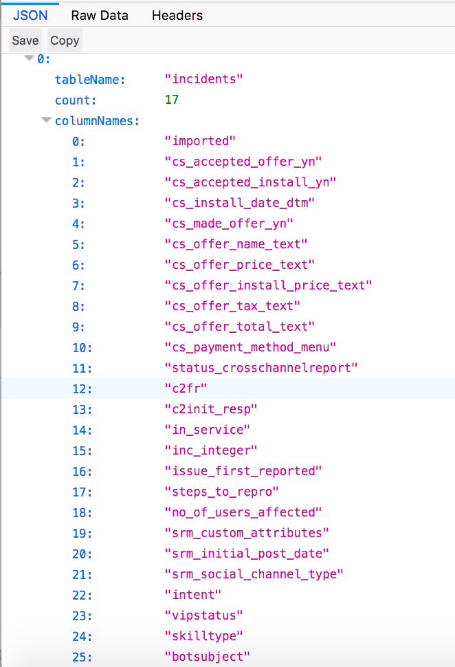 Note that the fields intent and vipstatus created are available now. - Now go to the dialog flow and locate the setupCustomProps state and add the custom fields intent and vipstatus to the custom properties. For this lab we will assign values Order and GOLD to these fields, respectively.
- Go to the Skills Tester in Oracle Digital Assistant user interface now. Type the following sentence and click on submit. Accept the chat in the Oracle Service Cloud AgentWeb application. Ensure you are logged in and are ready for Unrestricted chat. I would like to chat with a human
- Notice that the product id passed maps to a correct product name and is displayed in the Oracle Service Cloud incident screen. 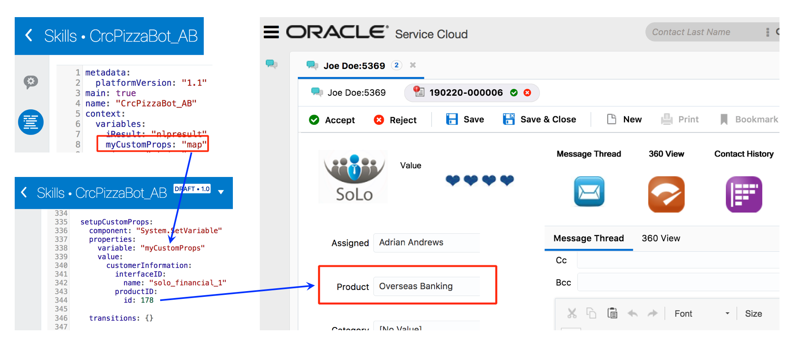
- Great! You are able to pass the primary attributes to the live agent. Now in the next section lets see how we could configure Oracle Service Cloud to transfer a live chat request to a custom queue rather than a default queue using custom fields intent and vipstatus that we just configured in the OBotML.
metadata:
platformVersion: "1.1"
main: true
name: "CrcPizzaBot_AB"
context:
variables:
iResult: "nlpresult"
myCustomProps: "map"
#
#...
# other flow states - skipped for breavity
#
setupCustomProps:
component: "System.SetVariable"
properties:
variable: "myCustomProps"
value:
customerInformation:
interfaceID:
name: "solo_financial_1" #Your Service Cloud interface name.
productID:
id: 178 #Valid Product ID.
transitions: {}
agentInitiation:
component: "System.AgentInitiation"
properties:
agentChannel: "ServiceCloudIntegration"
agentActions: "OrderPizza"
nlpResultVariable: "iResult"
waitingMessage: "Let me connect you with our Customer Service Agents who can further assist you!"
resumedMessage: "Please wait as find we find the best representative to help you"
customProperties: "${myCustomProps.value}"
transitions:
actions:
accepted: "agentConversation"
rejected: "reject"
OrderPizza: "OrderPizza"
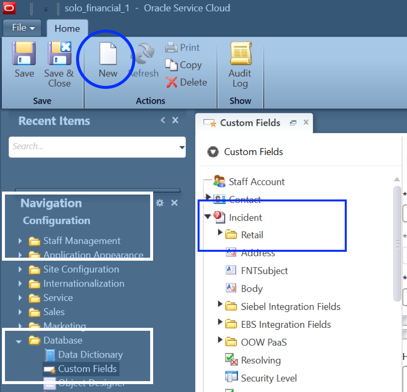
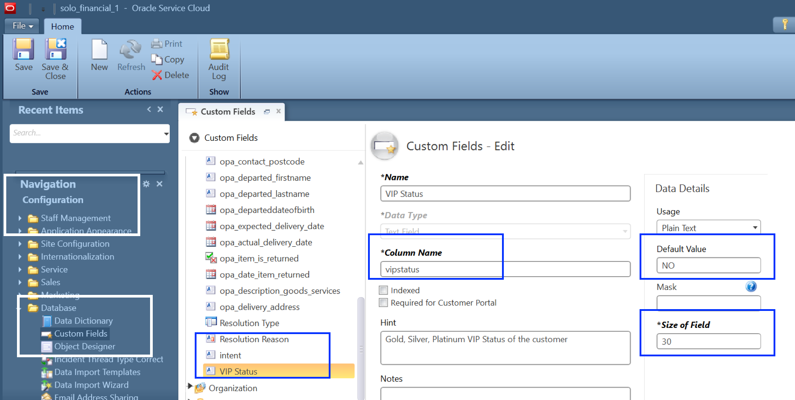
setupCustomProps:
component: "System.SetVariable"
properties:
variable: "myCustomProps"
value:
customerInformation:
interfaceID:
name: "solo_financial_1" #Your Service Cloud interface name.
productID:
id: 178 #Valid Product ID.
customFields:
- name: c$intent
dataType: "STRING"
dataValue:
stringValue: "Order"
- name: c$vipstatus
dataType: "STRING"
dataValue:
stringValue: "GOLD"
transitions: {}
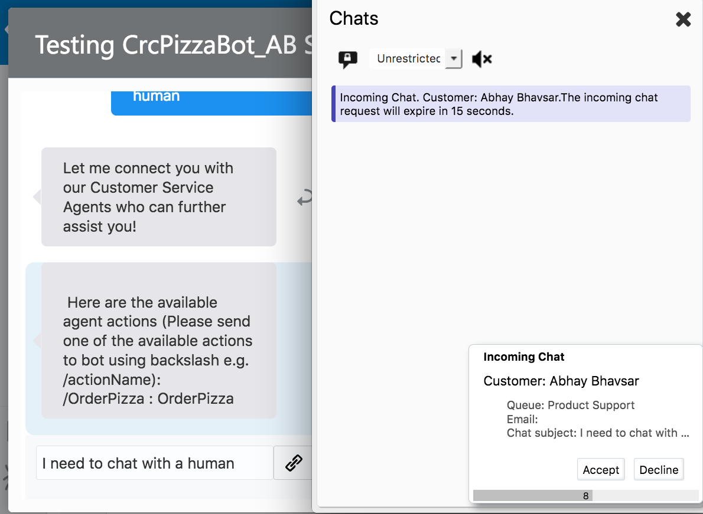
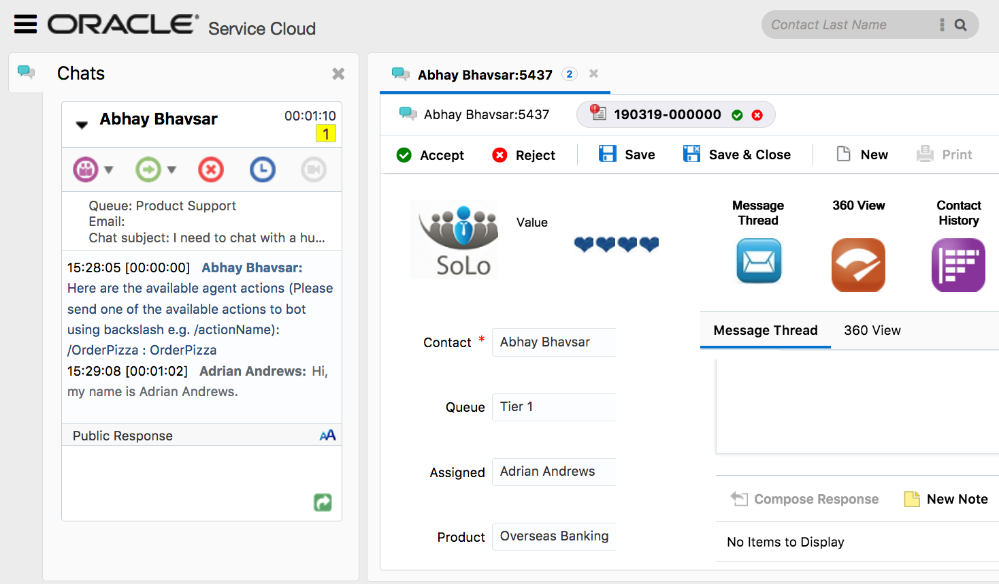
 Configure Custom Queue
Configure Custom Queue
- From the Navigation pane, select Configuration. Go to Customizable Menus and click on Chat Queues. Notice that there is Default Chat Queue. This is where your messages go by default. 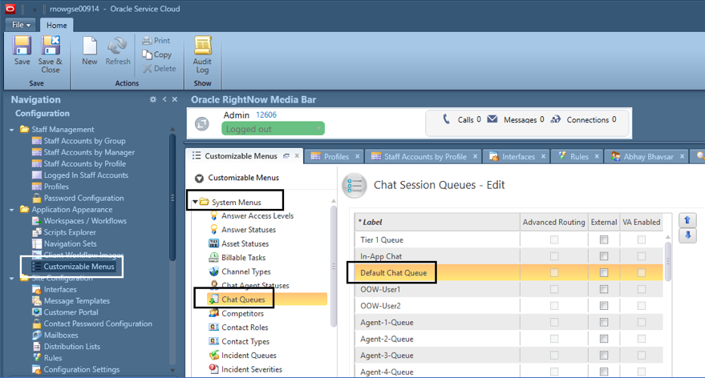
- Click on the New button on the Home Ribbon of your Service Cloud Client. Add a new chat queue called bot-queue. Note that you can name this as per your naming conventions. Just a make note of this custom chat queue name. 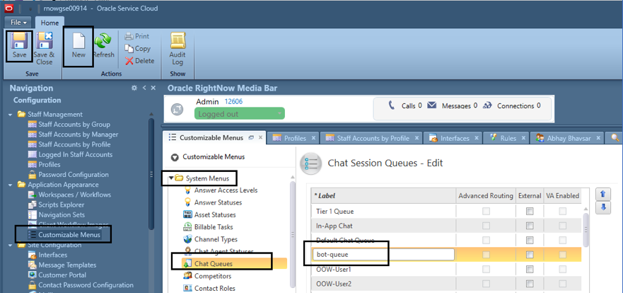
- From the Configuration select Profiles from Staff Management menu. This will open a Profiles tab on the right side of the window. You will create a new profile and associate this with a new user that you would create. You will then associate this newly created profile with the new queue bot-queue that you just created. Don’t worry, we will do this very carefully step by step. 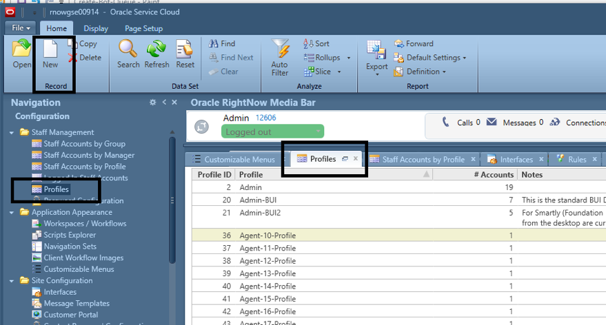
- Create a new profile by clicking on the New button on the Home ribbon. Give it a name that you can easily remember e.g. bot-profile. Click on Save button. 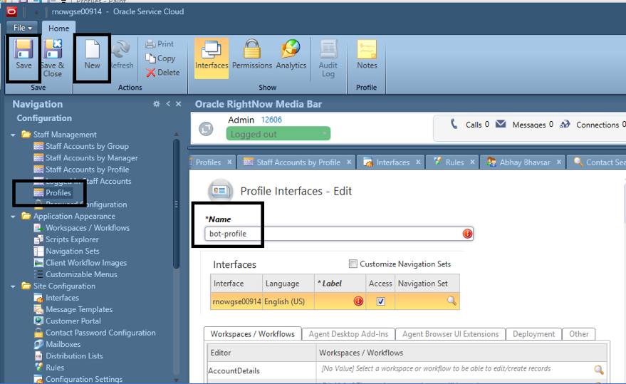
- Now configure the interfaces to ensure this profile has access to the browser and desktop based user interface. Click on Interfaces button on the Home ribbon if not already selected and go to Agent Desktop Add-ins tab for this new profile bot-profile that you just created. Click on the checkboxes as shown below. If you do not see any options under Agent Desktop Add-ins or you wish to use the web agent only then you can skip this step. 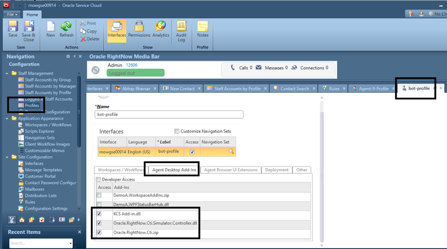
- Similarly select the Agent Browser UI Extensions and select the options as shown below. If you see no options you can skip this step. 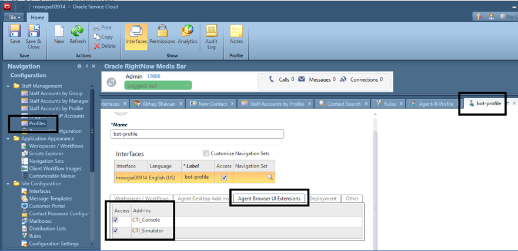
- Click on Customizable Navigation Sets and the Access checkbox as shown in the image below. Click on the Navigation Set icon in front of your interface. Select Admin Nav Set or any available navigation set suited for administrators. 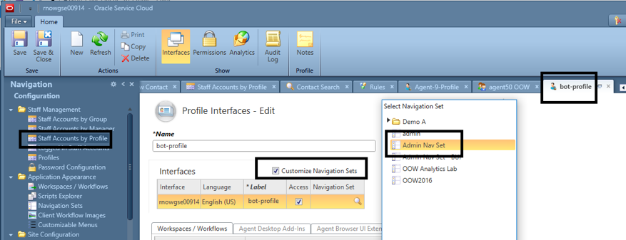
- Click on Permissions button on the Home ribbon. Click on Administration tab and click on Select All. Uncheck SSO Login(SAML 2.0).
- Ensure that the Chat Agent Permissions are also selected by clickin on Select All for that section. 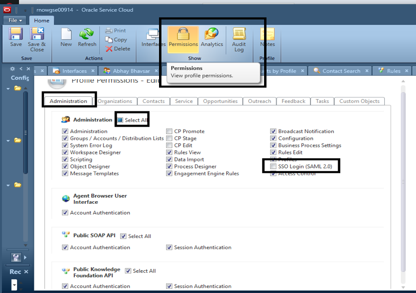
- Click on Permissions button on the Home ribbon. Click on Service tab and click on all the available Select All checkboxes. Go to all the sections and check Select All checkboxes. 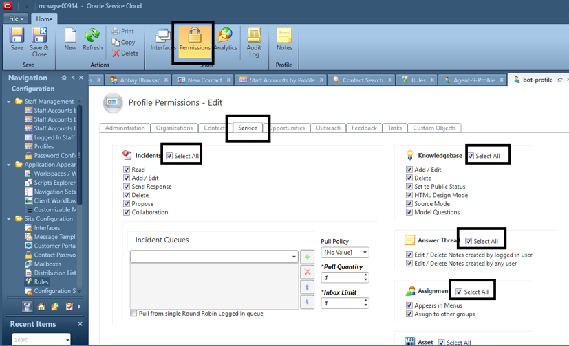
- Scroll down below on the Service
tab and select the chat queue bot-queue
from the list. Ensure that after selecting the queue you click
on the + button otherwise the queue will not get added to this
profile. If you miss this step
your messages would not get delivered to the bot-queue.
Under Chat Agent Statues section select the Available – Unrestricted option. This will ensure that when you login using a user botuser that we will create next the service cloud chat window would automatically be set to wait for new incoming chat requests from the bot.
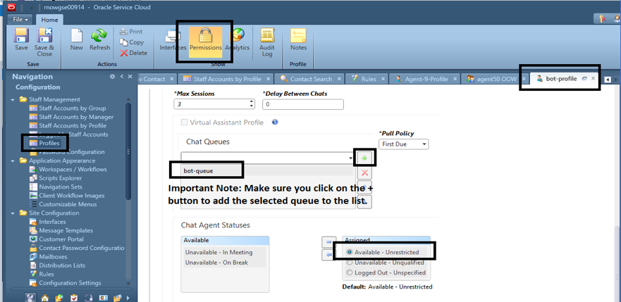
- Here is a quick view of the chat configuration. Ensure you have unchecked the Pull Chat option and selected Strict Priority Pull Policy as shown in the figure below. 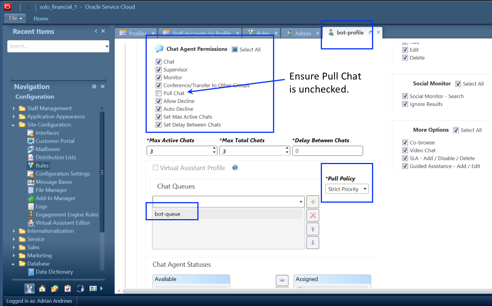
- Click on Save and Close. You will find this button on the Home ribbon next to Save.
- Access the profiles screen. Click on Refresh button on the Home ribbon and ensure you locate bot-queue in the list. Note that in your case the #Accounts column will display 0 since you have not created a new user named botuser and have not associated it with this profile yet. Let’s do that now. 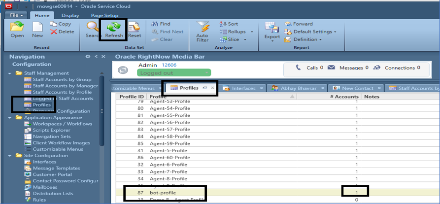
- Now click on Staff Accounts by Profile. Click on the New button on the Home ribbon now. 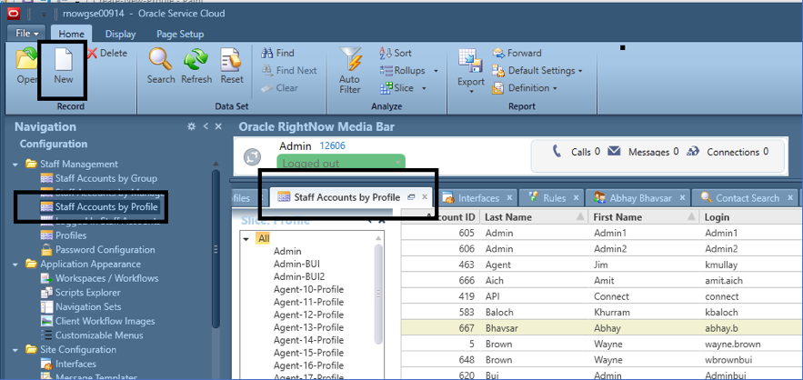
- Enter Login User Name as botuser. Provide a First Name, last Name and ensure you uncheck the box Password Expires. Select Default Currency and Default Country. 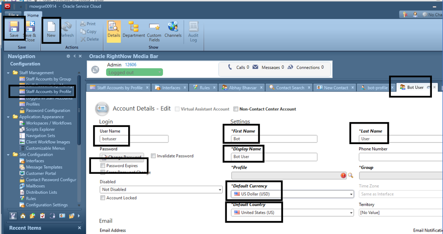
- Click on Profile Search icon and select your newly created profile e.g. bot-profile. 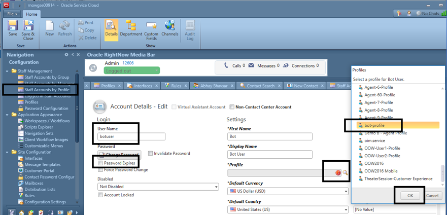
- Similarly search for group and select the Admin group. 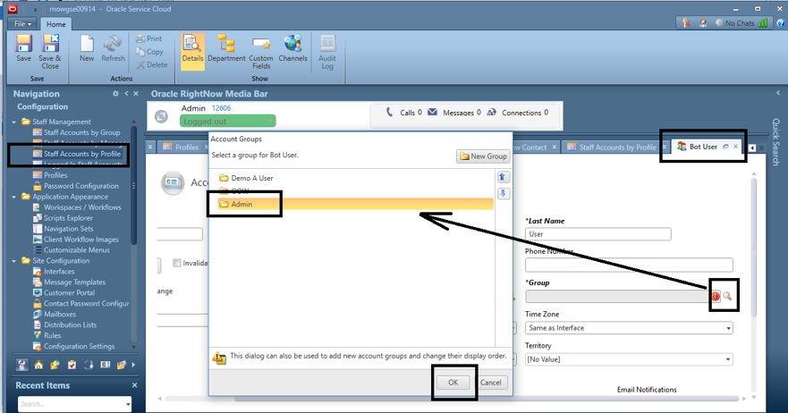
- Click on Save button after ensuring that the profile is selected and password expires in unchecked. Note that on saving it is going to prompt you to set up a password. 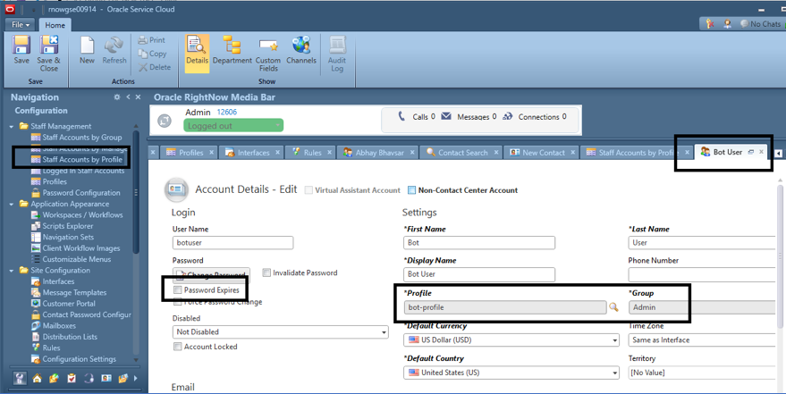
- Enter a suitable password e.g. Welcome1! 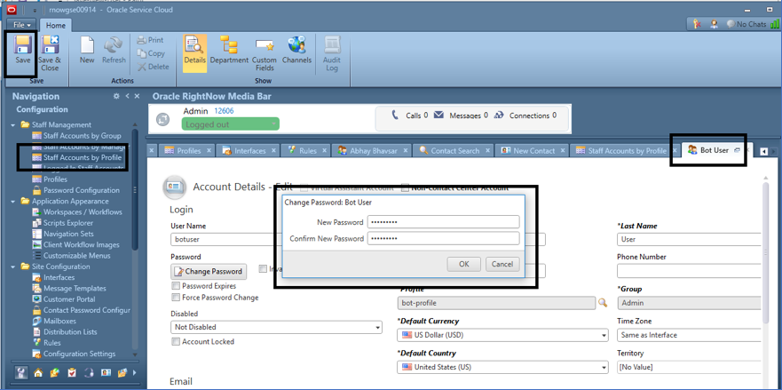
- You have now associated a user botuser with a profile bot-profile that is assigned to a new queue bot-queue. Go to Profiles and click on Refresh. Select bot-profile and you will see the botuser has been assigned this profile. 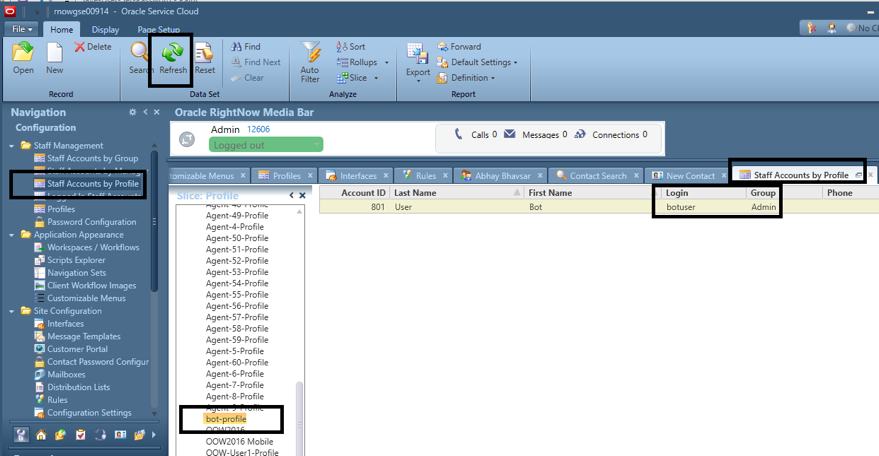
- Now let’s begin setting up a rule so that messages received from digital assistant skill are diverted to this queue. Now how do we differentiate the messages coming from the digital assistant as opposed to the web site live chat? While there could be a no. of ways to achieve it we are going to use the custom fields intent and vipstatus that we are passing as custom properties from the skill.
- This is just a recall of the dialog flow OBotML where you have setup custom properties. There is no action required on this again. This is jut a recap of the custom properties. For this lab we have assigned values Order and GOLD to these fields, respectively.
- Now goto the desktop client and click on Site Configuration. Under Site Configuration
select Rules.
IMPORTANT: Click on Chat button on the Home ribbon to ensure you are looking at Chat Rules.
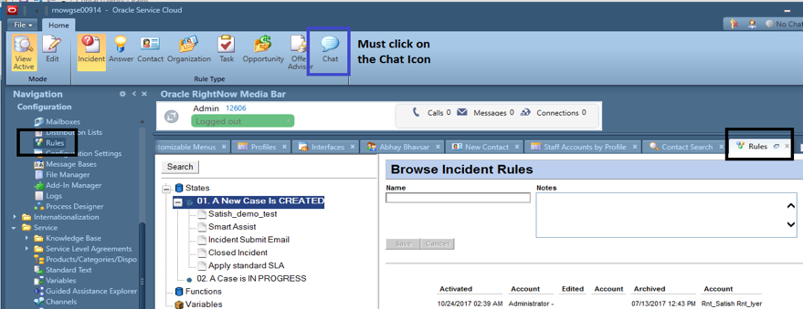
- Click on the Edit button on the Home ribbon to ensure you are in edit mode. 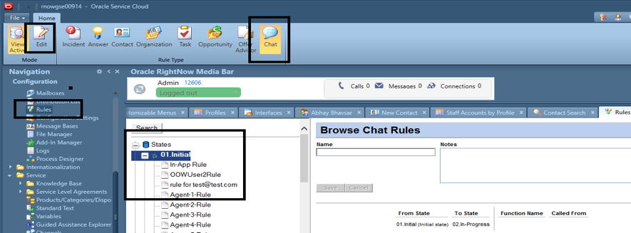
- Expand the States-->01.Initial rules structure and right click to open a context menu. Click on New Rule. 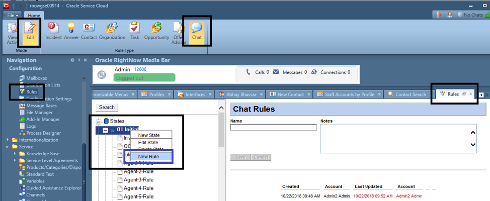
- Provide a rule name e.g. bot-queue-rule with some description. Click on Add IF Condition Based On. Select Incident - intent. Choose an equal operator and type value Order in the text field below. 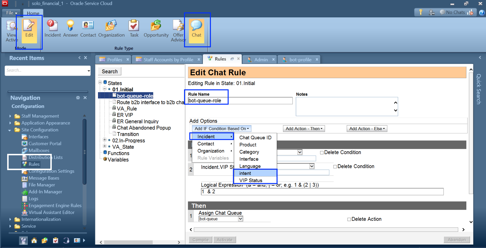
- Similarly add another condition for vipstatus = GOLD.
- Click on Add Action - Then and select Chat Queue ID. This will add a Then section to the rule. Click on Assign Chat Queue and selet bot-queue. 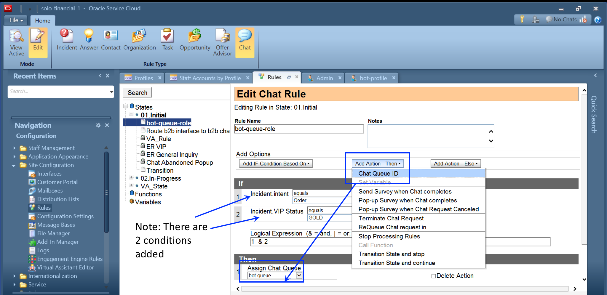
- Click on Save button. You will find this below the Then section, scroll down if required.
- After Save, the Compile and Activate buttons would get enabled, click on them one after the other. This will activate your rule.
- Your Service Cloud custom queue configuration is complete.
setupCustomProps:
component: "System.SetVariable"
properties:
variable: "myCustomProps"
value:
customerInformation:
interfaceID:
name: "solo_financial_1" #Your Service Cloud interface name.
productID:
id: 178 #Valid Product ID.
customFields:
- name: c$intent
dataType: "STRING"
dataValue:
stringValue: "Order"
- name: c$vipstatus
dataType: "STRING"
dataValue:
stringValue: "GOLD"
transitions: {}
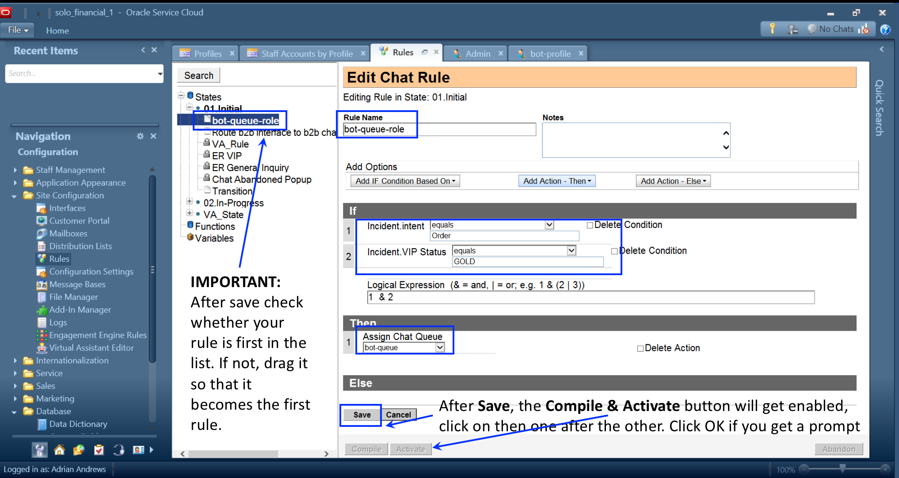
What you just did:
• You created a custom queue called bot-queue.• You created a profile called bot-profile. You associated the bot-profile with bot-queue.
• You created a user called botuser. You associated the bot-profile with this user.
• You created a Chat Rule called bot-queue-rule, added a condition to move messages received in the default queue to the bot-queue when the contact of the connecting user matches botcontact@smartly.com
What’s Next:
• Now let’s go back to the Oracle Digital Assistant skill and test the skill and the live chat integration again. This time we would want to see whether the message gets routed to the default queue or the newly created and configured bot-queue. Final test from the Oracle Digital Assistant Skill
Final test from the Oracle Digital Assistant Skill
- If you are already logged in, log out of the Service Cloud Client using the logout button on the top right menu icon. 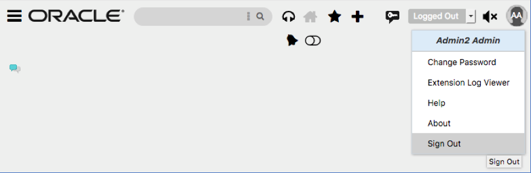
- Login as botuser with the password you have set up e.g. Welcome1! 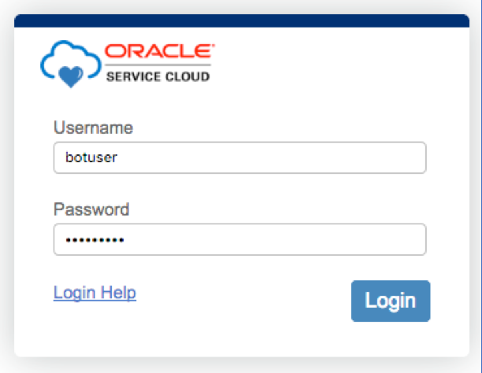
- This will show you the same service cloud web agent interface.
- Run the skill in the tester now. Enter Order a medium pizza.
- Click on Order button to order any pizza. Specify your location and complete the order.
- Now without resetting the conversation type I would like to chat with a human. This will initiate a convesation with Oracle Service Cloud live chat.
It might be a good idea to open both the windows side by side so that you can see both conversations together. See screen shot below.
You will notice that the a popup shows up on the service cloud chat window with queue name as bot-queue rather then Default queue. This means you have set up th service cloud configuration successfully.
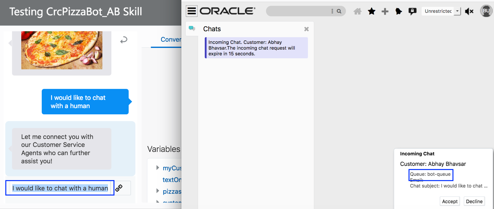 - Also you will notice that the existing conversation has been carried over to the service cloud chat window. 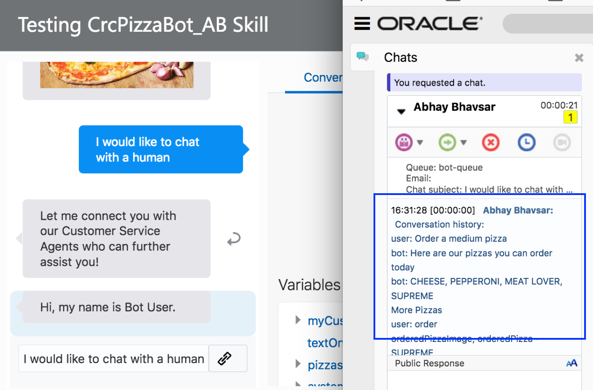
- You can now continue exchanging messages between the user and the live chat window.

Conclusion
Congratulations!
You have successfully completed tutorial 2. You have been able to send context from the skill to the live agent and also direct messages to a custom queue.